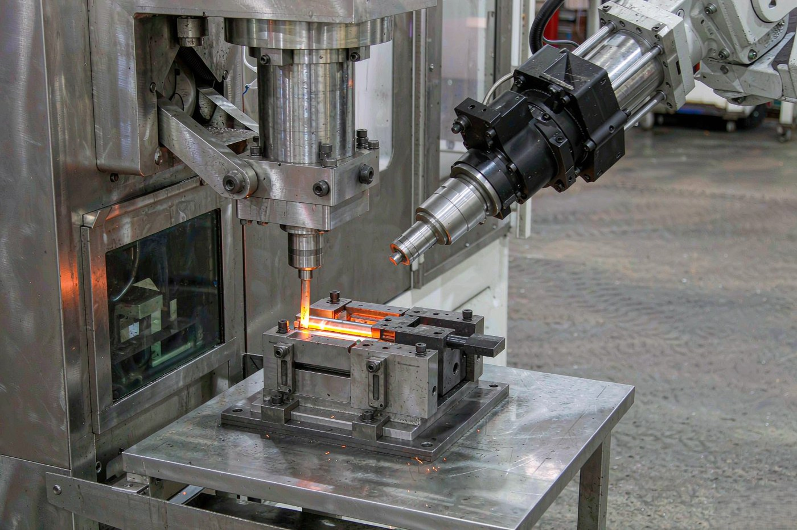
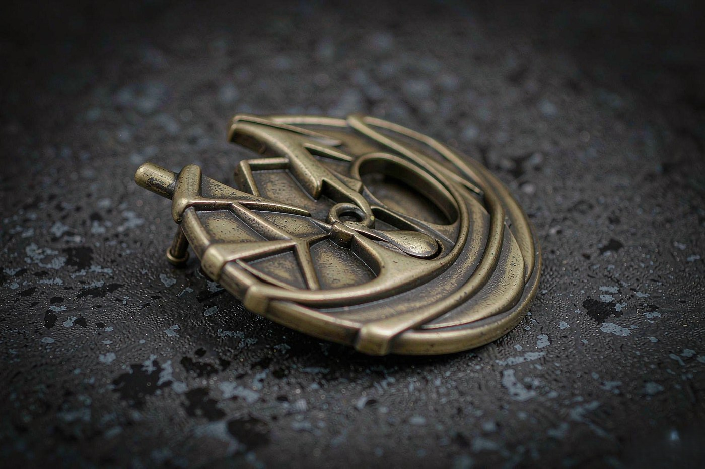
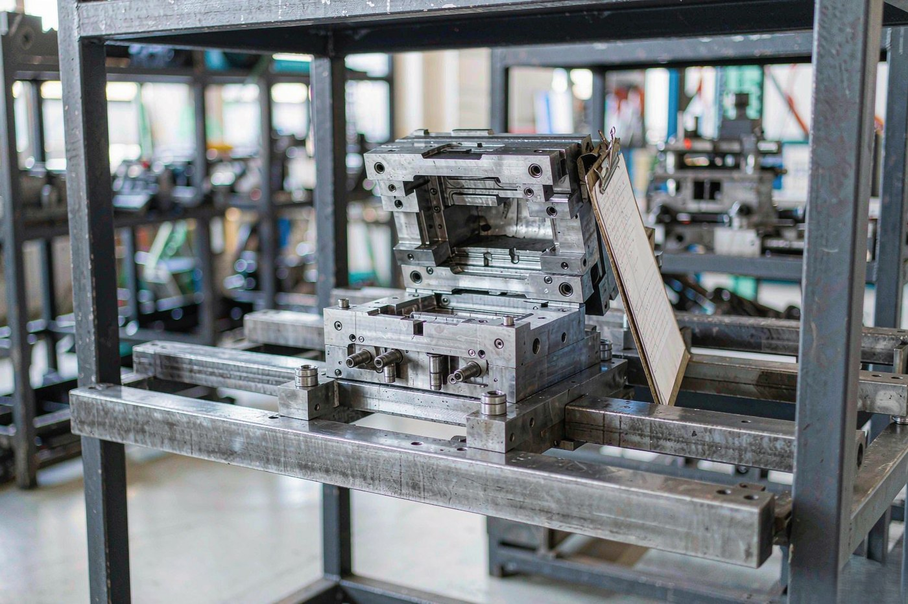

Most badges are made by stamping a thin sheet of metal. The press cuts the outline, forms the relief, and the piece comes off the tool in seconds. It is an extraordinarily efficient way to make a flat, coloured pin, and it covers most orders.
Some artwork cannot be made that way. A design that goes back into the metal, a window cut clean through the body, a spinner that has to turn: none of them come from a stamping die, because a press forms a shape, it does not cast volume. 3D die casting is the process that carries them. Molten zinc alloy is forced into a two-part mould under pressure, and the piece comes out of the tool with its depth already in it.
This is what changes when you order 3D die cast lapel pins: the geometry the tool can hold, the size the process reaches, what the finish can be, and what the tooling commits you to. It is also the process worth understanding before you commit to it, because it carries the most complex tooling of the five we run.

What 3D die casting actually is
The short version: the piece is cast, not pressed. Zinc alloy is the metal, and it is cast into a two-part mould, so the tool carries the shape of the front, the shape of the back and everything in between.
That is the whole difference, and it explains most of what follows. A stamping die works on a sheet, so the design has to live in the plane of the metal and anything that goes behind the front face has to be a separate part attached afterwards. A casting mould has depth in it. The relief is formed rather than pierced, which is why die struck and 3D die cast pieces can hold slightly different geometry from the same drawing. The process comparison sets the five processes side by side, and the 3D die cast section of the product page carries the specification in full.
| Process | Base metal | Depth | Min. line width |
|---|---|---|---|
| Hard enamel | 0.3 mm brass, 0.3 mm iron or 0.4 mm stainless steel | Filled flush, then lapped on a flat stone | 0.3 mm |
| Soft enamel | 0.3 mm brass, 0.3 mm iron or 0.4 mm stainless steel | 0.15 mm to 0.3 mm cavity, recessed below the rim | 0.3 mm |
| Die struck | Solid brass, bronze or iron, 1.0 mm to 1.5 mm | 0.4 mm to 1.2 mm of stamped relief | Not applicable, relief is raised |
| 3D die cast | Zinc alloy, cast in a two-part mould | Multi-level, from 1.5 mm upward | Not applicable, relief is raised |
| Offset printed | Stainless steel or brass blank | Flat, under a clear epoxy dome | Limited by print resolution, not by metal |
Read the last column carefully. Hard enamel and soft enamel have a minimum line width because the colour has to be separated from the metal by a line that can hold it. A casting has no filled areas, so that rule does not apply to it: the structure of the piece is carried by the light on the relief, not by the gap between two colours.
The workshop behind this is ours rather than a sub-contractor's. We run eight hot-chamber zinc alloy die casting machines alongside sixteen hydraulic friction presses rated to 200 tonnes, and the die casters take housings up to 80 mm. The factory page sets out what sits under our own roof.
Relief and depth
Relief on a cast piece is multi-level, and it starts high. The tooling gives relief from 1.5 mm upward, which is deeper than the 0.4 mm to 1.2 mm of stamped relief a die struck piece carries. A pin that looks flat on a screen can end up with more relief than you expected once the tool is cut.
Depth is where a cast piece earns its cost, and it is also where designs most often go wrong. Multi-level relief means the design has to read from the top down: the highest level, then the level below it, then the flat. A drawing that works as a flat graphic will usually look under-specified once it is three levels deep, because depth changes which shapes read as separate from each other.
Two practical consequences follow. First, the artwork should show the levels explicitly rather than leaving them to be interpreted, because the difference between a design that is tooled once and one that gets redrawn is usually a level nobody wrote down. Second, the deeper the relief, the more the light does the work, which means the finish matters more rather than less. The artwork preparation guide covers how to set a file up so it survives the process.
Cutouts and moving parts
This is the part of the process that nothing else on our list can do.
An internal cutout on a cast piece is part of the mould. It is a window cast through the body, so there is no pierce mark around it, no torn edge and no separate backing plate to glue on. The same is true of a mechanism: a spinner, a track slider, a hinge, a bobble that swings on its post. Stamping cannot produce any of them, because a press forms a shape and these need a body cast around them.

If your design carries a moving element, there is no second-choice process. It is die cast or nothing, and the mechanism has to be understood before the tool is cut rather than after.
A moving part also changes what needs confirming on the drawing. It is assembled, so the tolerance between the moving element and the body is part of the specification rather than a detail for the workshop to sort out. These are the points worth settling:
- The size of the pivot and the clearance around it, because that clearance is what decides whether the part turns freely or binds.
- The arc the moving element sweeps, and whether it fouls the body of the pin at either end of that arc.
- Whether a cutout is open on one side or on both, since a through-window changes the strength of the piece around it.
- How much room the mechanism leaves on the back for the clutch and the backing.
All four belong on the proof rather than in a phone call later. The design file specification covers what the drawing has to show, and the backings page covers what fits on the reverse.
Size, metal and lead time
Cast lapel pins run from 20 mm to 80 mm. That is a different band from the 14 mm to 60 mm covered by the rest of our pin range, and it is worth understanding why: the die casting machines take housings up to 80 mm, so a larger piece is a question of machine capacity rather than of scaling the artwork up. The lapel pin sizes guide covers the sizing rules for the other processes.
The metal is not negotiable within the process. Zinc alloy is what we cast, and the reason is mechanical rather than financial. Brass and iron are the metals for hard enamel and die struck work, stainless steel is for plated pieces that have to resist corrosion, and zinc alloy is what carries a true three-dimensional form. The base metal is chosen for the process and the finish, and it is stated on the quotation rather than left as a line change later.
| Specification | What we quote |
|---|---|
| Base metal | Zinc alloy |
| Typical size | 20 mm to 80 mm (0.79 in to 3.15 in) |
| Relief | Multi-level, from 1.5 mm upward |
| Colour | Plated, with optional painted detail |
| Tooling | Two-part die casting mould, cut in our own tooling shop |
| Surface | Multi-level relief with cast cutouts and moving parts |
| Production lead time | 7 to 10 business days |
Seven to ten business days is the production window once the tool is cut, and a five business day rush is possible where a window allows it. It is the same window we quote for stamped and struck work, because the queue is the queue. The tool ahead of you is the expensive part, and it is worth settling the design before it is cut. The bulk order guide shows how the schedule and the packaging change with volume.
Colour and finish
A cast piece is metal all the way through, so its colour comes from the surface rather than from a fill. The default is plating, with painted detail available on top.
This is where a cast piece differs from the other processes in a way that works in your favour. The full plating range is available to cast pieces, including the antique and matte finishes, because the cast surface is thicker and more forgiving than a stamped one. That matters most for antique finishes in particular, since an antique finish needs relief to work with, and a multi-level casting has more relief to give it than a flat filled piece ever will. The plating finish guide lists all twelve and explains how each one is reached.
Where the colour is applied as paint instead, it is solid colour sprayed after casting, matched within one Pantone step on a calibrated line. Solid fills only. A gradient or a photograph is not a casting problem, it is a printing problem, and the answer for it is an offset printed pin.
The relief edges are finished by hand at the grinding and polishing stations, which is where the highlight lines that make a cast piece look cast actually come from. Nothing on a cast piece can chip, because there is no enamel face to chip: it is cast metal with no enamel, built for handling.
Tooling and repeat orders
A two-part casting mould is the most complex tooling of the five processes we run, and that has a direct effect on what you can change afterwards.
The rule is the same as for any other process, but it bites harder here: a change of artwork, a change of size or a change of plating is a new tool, not an adjustment. The metal is fixed into the specification as well, so a move from zinc alloy to brass is not a line change on the purchase order. It is a different mould, cut from different steel.

What softens the cost is the archive. Moulds cut in our tooling shop are archived for three years, so a repeat order inside that window runs on the existing mould and does not pay tooling again. It also carries the specification you approved the first time, which is usually the point: a reorder is meant to be the same pin.
The practical consequence is to settle the design before the tool is cut rather than after. It costs a conversation to settle it first and a new tool to settle it later.
When to choose something else instead
Die casting is the most capable process we run, and it is not the right answer for most orders. Three questions will usually settle it.
If the design contains a gradient or a photograph, it is offset printed. No other process will hold a gradient, because enamel is a solid material matched to Pantone and it does not blend. The offset printed guide covers that process end to end.
If the piece is going to be handled hard and it needs to be all metal, it is die struck. Solid metal, up to 1.5 mm thick, with relief formed by a 200 tonne press. Nothing to chip, nothing to crack.
If the answer to both of those is no, you are choosing between hard enamel and soft enamel, and that decision comes down to colour count and gloss: up to four Pantone references with a crisp raised metal line, or up to six with a brighter, glossier fill.
Which leaves die casting for the designs that genuinely need it: real depth, a cutout through the body, or a part that moves.
3D die cast questions answered
Die struck is stamped from solid metal: brass, bronze or iron between 1.0 and 1.5 mm, with relief of 0.4 mm to 1.2 mm formed by a 200 tonne press. A 3D die cast piece is cast in zinc alloy from a two-part mould, with multi-level relief from 1.5 mm upward, and it can carry internal cutouts and moving parts. Die struck is the more durable of the two because there is no enamel to chip. Die cast is the only one of the two that can carry depth that goes back into the metal.
No, and it is not a compromise. A cast piece is metal all the way through, with no enamel face to chip or crack. Its colour comes from the plating or from paint sprayed onto the cast surface, which is a different route to the same visual result and a different durability profile.
Cast lapel pins run from 20 mm to 80 mm, and the die casting machines take housings up to 80 mm. The rest of our pin range runs from 14 mm to 60 mm, so a cast piece sits in a different band rather than simply extending the same one.
Yes. Spinners, track sliders, hinges and bobbles are cast into the mould and assembled into the body. Stamping cannot produce a hinge, a spinner or a part that rolls, so a design with a moving element has one process and one process only.
Die casting carries the most complex tooling of the five processes, because the mould has to be built in two parts to hold the depth, and tooling is the part of the cost that is paid once. That cost is spread across the quantity you order, and the rate applied to your order is calculated from that quantity, so the same design at a higher volume carries it more thinly. Tooling is quoted as a separate line, and it is not charged until you approve the proof.
Cast pieces take the full plating range, including the antique and matte finishes, because the cast surface is thicker and more forgiving. Where colour is applied as paint rather than plating, it is solid colour sprayed after casting, matched within one Pantone step on a calibrated line. Solid fills only, so a gradient or a photograph calls for an offset printed piece instead.
Seven to ten business days in production, once the tool is cut. A five business day rush is possible where a window allows it. Tooling is cut in our own workshop and sits in front of that schedule, so it is worth settling the design before the tool is cut rather than after.